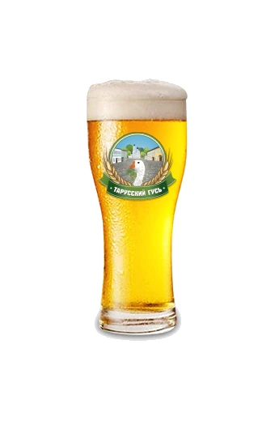
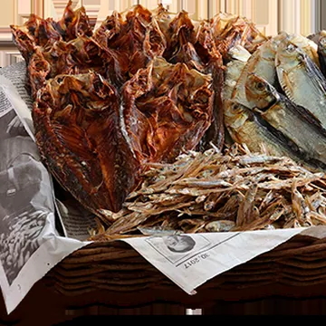

01 · Светлый лагер
Тарусский гусь «Светлое»
Сварено по чешской рецептуре отварочным способом затирания из высококачественного импортного сырья: чешский и немецкий солод, чешский жатецкий хмель. Пиво имеет светло-золотистый цвет, лёгкий освежающий солодовый вкус и умеренную хмелевую горчинку.
- Тип пива
- Светлый лагер
- Плотность
- 11%
- Алкоголь
- не менее 4,0%
- Дображивание
- 38 дней
Хорошо с

Вяленая рыба
Где попробовать
Срок годности — 14 дней